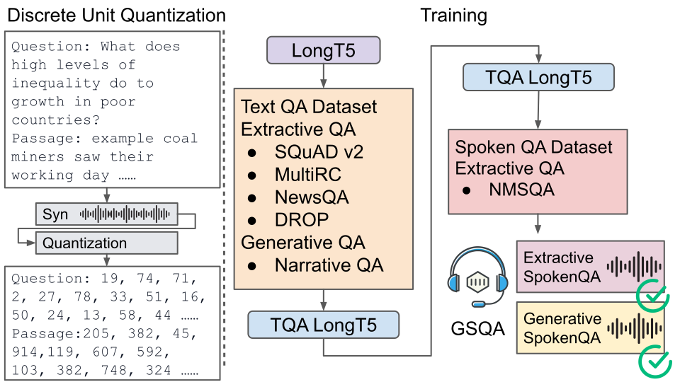

In recent advancements in speech-to-speech question answering (QA), end-to-end models have made significant strides. However, previous research has primarily focused on extractive span selection. While this extractive-based approach is effective when answers are present directly within the input, it falls short in addressing abstractive questions, where answers are not directly extracted but inferred from the given information.
To bridge this gap, we introduce the first end-to-end Generative Spoken Question Answering (GSQA) model that empowers the system to engage in abstractive reasoning. The challenge in training our GSQA model lies in the absence of a spoken abstractive QA dataset. We propose using text models for initialization and leveraging the extractive QA dataset to transfer knowledge from the text generative model to the spoken generative model.
Experimental results indicate that our model surpasses the previous extractive model by 3% on extractive QA datasets. Furthermore, in the abstractive zero-shot domain, our model's capabilities closely match to the cascade model. In conclusion, our GSQA model shows the potential to generalize to a broad spectrum of questions, thus further expanding spoken question answering capabilities of abstractive QA.
